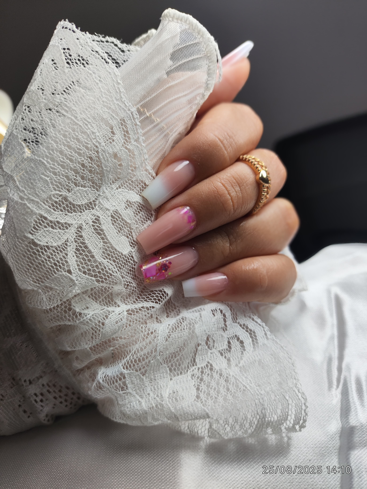

Bem-vinda ao espaço onde suas unhas se transformam em arte!

Nossos Serviços
Alongamento de Fibra de Vidro
Técnica que utiliza fibra de vidro para alongar as unhas de forma resistente e natural, proporcionando durabilidade e beleza.
Alongamento de Gel no Molde
Processo de alongamento utilizando moldes e gel específico, criando unhas com aparência natural e formato personalizado.
Banho de Gel
Técnica que fortalece suas unhas naturais com uma camada protetora de gel, proporcionando brilho e durabilidade.
Blindagem
Tratamento que protege e fortalece as unhas naturais, ideal para unhas fracas ou que lascam facilmente.
Esmaltação em Gel
Aplicação de esmalte em gel que garante maior durabilidade da cor e brilho intenso por várias semanas.
Benefícios do Banho em Gel
- Maior resistência às unhas naturais
- Durabilidade superior ao esmalte comum
- Proteção contra quebras e lascamentos
- Aparência sempre impecável
- Brilho intenso e duradouro
Agende seu horário!
Entre em contato agora mesmo e transforme suas unhas!
Agendar pelo WhatsApp